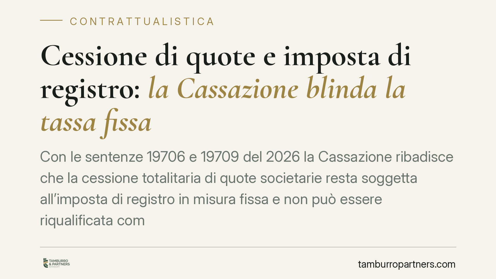

Cessione di quote e imposta di registro: la Cassazione blinda la tassa fissa
Con le sentenze 19706 e 19709 del 2026 la Cassazione ribadisce che la cessione totalitaria di quote societarie resta soggetta all'imposta di registro in misura fissa e non può essere riqualificata come cessione d'azienda. Anche il conferimento in una newco seguito dalla vendita delle quote non costituisce abuso del diritto se sorrette da valide ragioni extrafiscali.

Il principio affermato
La Cassazione civile torna su un tema che da anni oppone contribuenti e Agenzia delle Entrate: come tassare il trasferimento del controllo di una società. Con le sentenze 19706/2026 e 19709/2026, i giudici di legittimità fissano due punti fermi.
Primo: la cessione di quote sociali, anche se totalitaria (cioè riguardante l'intero capitale), sconta l'imposta di registro in misura fissa e non può essere automaticamente trattata come vendita d'azienda, che sarebbe invece tassata in misura proporzionale sul valore dei beni trasferiti.
Secondo: l'operazione articolata — conferimento del ramo d'azienda in una società di nuova costituzione (newco), seguita dalla cessione delle quote — non integra di per sé un abuso del diritto, purché esistano ragioni economiche diverse dal mero risparmio fiscale.
Inquadramento normativo
Il nodo ruota attorno all'articolo 20 del DPR 131/1986 (Testo unico dell'imposta di registro). La norma impone di tassare l'atto in base alla sua natura giuridica e agli effetti che produce, non a quelli di una presunta operazione «complessiva» ricostruita dall'amministrazione. Dopo la modifica introdotta dalla legge di bilancio 2018 e l'avallo della Corte costituzionale, l'articolo 20 non consente più di collegare atti distinti per riqualificarli unitariamente.
Sul fronte dell'elusione, il riferimento è l'articolo 10-bis della legge 212/2000 (Statuto del contribuente), che definisce l'abuso del diritto. Un'operazione è abusiva solo se priva di sostanza economica e realizzata essenzialmente per ottenere vantaggi fiscali indebiti. La presenza di valide ragioni extrafiscali — anche organizzative o gestionali — esclude l'abuso.
Le due sentenze collocano quindi la riqualificazione nel suo perimetro corretto: l'Agenzia non può usare l'articolo 20 come scorciatoia per aggirare l'articolo 10-bis, saltando le garanzie procedurali (contraddittorio preventivo, onere della prova rafforzato) che quest'ultimo impone.
Implicazioni pratiche
Per imprenditori e soci che pianificano il passaggio di una società, il quadro diventa più prevedibile. La cessione di quote — operazione frequente nelle riorganizzazioni, nei passaggi generazionali e nelle operazioni di M&A — mantiene il suo trattamento fiscale agevolato rispetto alla cessione diretta dei beni aziendali.
La differenza economica non è marginale. Vendere l'azienda significa scontare l'imposta proporzionale, calcolata sul valore dei singoli beni e crediti, con aliquote che variano a seconda delle componenti. Vendere le quote della società che quell'azienda possiede significa pagare l'imposta in misura fissa.
Resta però un avvertimento operativo: la tutela non è automatica. L'Agenzia conserva il potere di contestare l'abuso del diritto quando l'operazione appare costruita solo per risparmiare. La differenza la fanno le ragioni economiche reali e la loro documentabilità. Un conferimento seguito da vendita delle quote regge se risponde a logiche di segregazione del rischio, riorganizzazione del gruppo o preparazione all'ingresso di un investitore; non regge se è un guscio pensato per vestire una cessione d'azienda.
Cosa fare in concreto
- Documentate le ragioni extrafiscali dell'operazione fin dalla fase di progettazione: verbali, business plan, corrispondenza con potenziali acquirenti. La prova si costruisce prima, non dopo l'accertamento.
- Verificate la coerenza temporale e sostanziale tra conferimento e cessione: tempi troppo ravvicinati e assenza di reale attività della newco sono segnali che l'amministrazione valorizza.
- Richiedete un interpello antiabuso all'Agenzia delle Entrate quando l'operazione è complessa o di importo rilevante: consente di ottenere un orientamento preventivo e riduce l'incertezza.
- Valutate l'impatto fiscale complessivo con un professionista, considerando imposte dirette, indirette e la posizione dei singoli soci, non solo l'imposta di registro.
- Conservate la documentazione per tutto il periodo di accertamento, anche dopo la chiusura dell'operazione.
Le pronunce rafforzano la certezza del diritto per chi opera correttamente, ma non autorizzano automatismi. La legittimità dell'operazione dipende dalla sua sostanza, non dalla sua etichetta.
---
*Contributo informativo a cura di Tamburro & Partners - Avv. Giuseppe Tamburro. Non costituisce parere legale.*
Ogni contratto ha il suo equilibrio.
Se vuoi una revisione delle clausole o una redazione su misura, scrivi allo studio. Ti rispondiamo entro un giorno lavorativo.